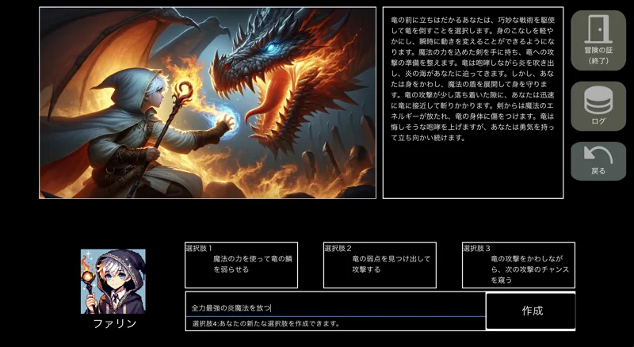
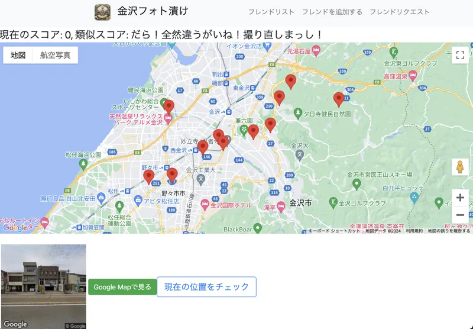
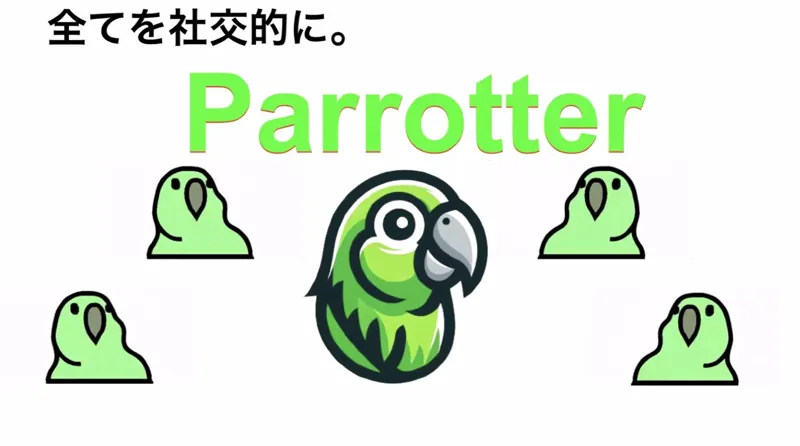
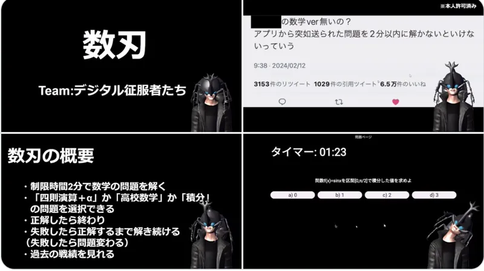
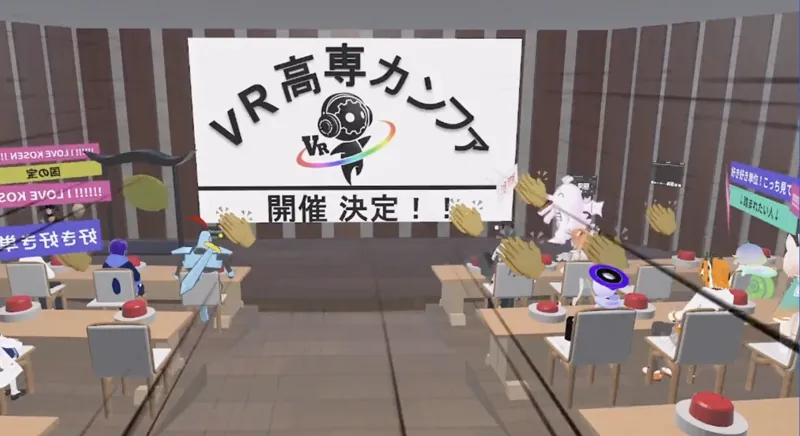
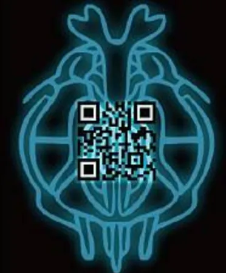
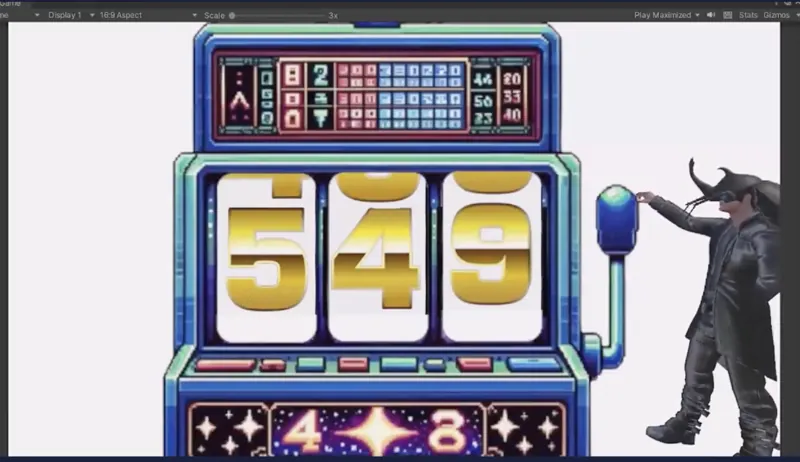
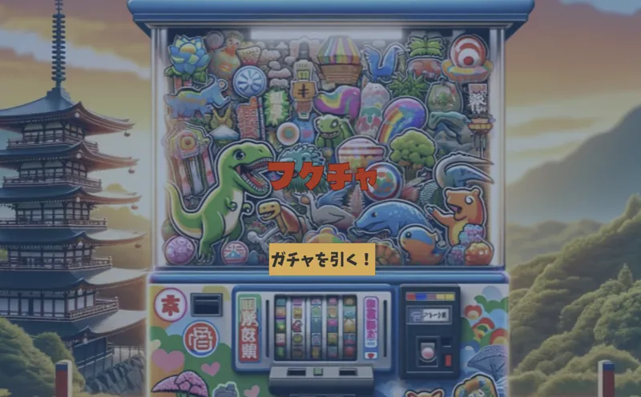
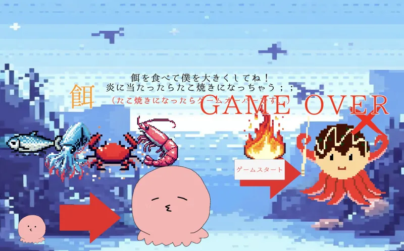
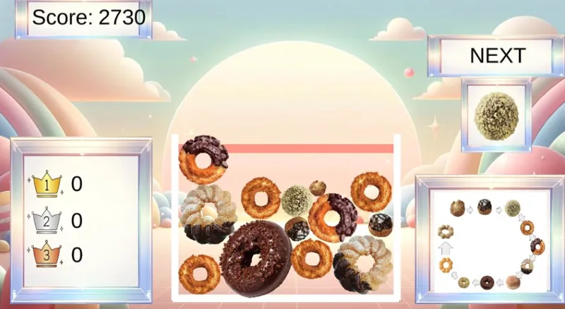

友人と二人で制作した初のオリジナルゲーム
ALAKAZAR
監獄都市を、一手ずつ突破せよ。
武器ごとに異なる移動・攻撃範囲と妖精の力を使い、敵の攻撃予告を読みながら戦うターン制タクティクスローグライク。
体験版公開中
Steamストアページ近日公開予定
▶ WORKS
かぶと
GALLERYでは、これまで作ってきた作品を紹介しています。
INTRO
ハッカソン、コンテスト、授業制作、個人開発で制作したプロトタイプや実験的な作品をまとめています。公開・運用中のサービスだけでなく、発表、検証、学習、制作途中のものも含まれます。
Webアプリ、AI、Unity、ハードウェア制御、教材的プロトタイプなど、目的や対象に合わせて技術を選びながら制作してきました。それぞれの作品では、機能そのものだけでなく、誰が触るのか、どの場面で使うのか、どう見せれば伝わるのかを意識しています。
FEATURED
友人と二人で制作した初のオリジナルゲーム
監獄都市を、一手ずつ突破せよ。
武器ごとに異なる移動・攻撃範囲と妖精の力を使い、敵の攻撃予告を読みながら戦うターン制タクティクスローグライク。
WORKS

ユーザーの入力や選択肢に応じて、AIが物語と画像を生成するリアルタイム生成型アドベンチャーゲームです。生成AIの出力をそのまま見せるだけではなく、ゲームとして進行している感覚を保つことを意識しました。

ランダムに指定された地点へ実際に行き、ストリートビューに近い構図の写真を撮ることでスコアを得る位置情報ゲームです。観光地として有名な場所だけでなく、普段は通り過ぎてしまう場所にも体験を与え、地域を楽しく感じられるようにすることを目指しました。

SNS上の文章や画像を、より社交的な表現へ変換することをテーマにしたプロトタイプです。AIによる変換機能だけでなく、投稿がどのように受け取られるか、コミュニケーション上の摩擦をどう減らせるかを考えながら制作しました。

数学問題を素早く解くことをテーマにしたWebアプリです。学習系の要素を持ちながらも、まず触ってすぐ遊べること、短い時間で繰り返したくなるテンポを意識しました。

VRChat上で高専カンファレンスを開催するためのワールド制作・空間設計に取り組んだプロジェクトです。登壇スペースだけでなく、交流やミニゲームを通して参加者同士の接点が生まれるような構成を考えました。
Webアプリでスタート地点、ゴール地点、障害物を設定し、最短経路を計算して、LEDの点灯や自走車の動きに反映するシステムです。Pythonによる経路探索、WebSocket通信、ESP32によるモーター制御・LED制御を組み合わせて制作しました。
画面上の操作が現実の光や車の動きにつながるため、ソフトウェアとハードウェアを一つの体験として扱うことを意識しました。
GitHubや共同開発の流れを学ぶために制作した、キャラクターバトル形式の教材的プロトタイプです。参加者がキャラクタークラスを追加し、ステータスや見た目を設定することで、プログラムの拡張や共同編集の流れを体験できるようにしました。
技術を説明するだけでなく、参加者が自分のキャラクターを作りながら学べるように、教材としての分かりやすさと遊びの要素を両立させることを意識しました。
AIとの会話を長期的に扱うための、記録・再利用の仕組みを試している制作中のプロトタイプです。FastAPI、Streamlit、GiNZAなどを使い、会話データをローカル環境で扱うための土台を作っています。
単にAIを呼び出すのではなく、会話の中で何を記録し、後からどう取り出せると自然かを考えるための実験として取り組んでいます。

名刺などの現実の媒体から、3Dモデルを呼び出すことを試したAR作品です。現実の印刷物とデジタルコンテンツをつなげる表現として制作しました。
当時使用していたリンクは期限切れのため、画像のみ掲載しています。
MINI GAMES
ハッカソンや講習会、短時間制作で作った小規模な作品です。技術検証やアイデアの試作として、短い時間で触れる形にすることを重視して制作しました。

同学科会の抽選会用に制作した、スロット形式の抽選ツールです。

シビックテックハッカソン in 鯖江で制作した、地域や観光をテーマにした短時間制作プロトタイプです。

シンプルな操作で遊べる小規模ゲームとして制作した作品です。

Unity講習会用に制作した、ゲーム制作の流れを説明するためのサンプル作品です。